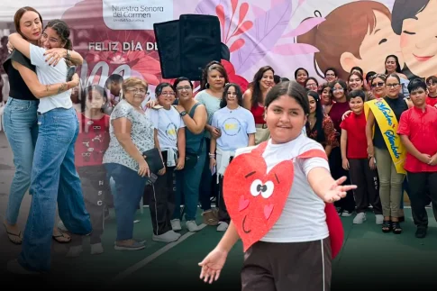
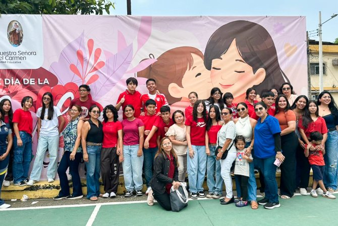
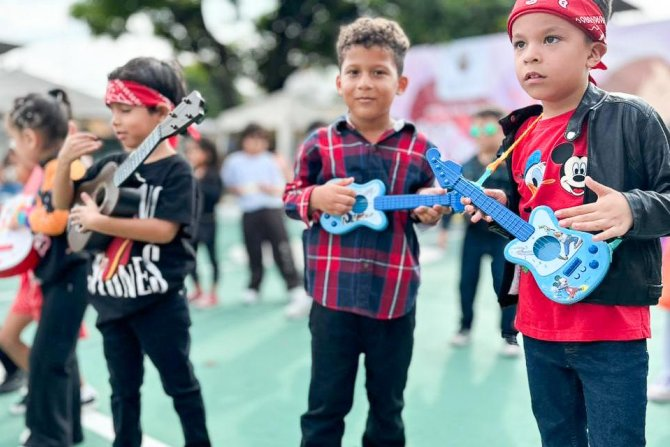

Así celebraron los planteles de Guayaquil el Día de la Madre.
La llamada “reina del hogar” fue homenajeada por sus hijos en una jornada en la que no faltaron los gestos de cariño, la música y la alegría familiar.

Los festejos se realizaron en honor al Día de la Madre.
Los planteles educativos de Guayaquil vivieron una jornada llena de emociones, música y actividades artísticas en el marco de la celebración por el Día de la Madre, una fecha que reunió a estudiantes, docentes y padres de familia en un ambiente de integración, reconocimiento y unión familiar.
Elección de la Madre Símbolo marcó el inicio de la jornada.

Una mañana de celebración para la reina del hogar,Cortesia.
La programación en varias unidades educativas inició con la tradicional elección de la Madre Símbolo del plantel, un espacio en el que participaron representantes de todos los cursos. Esta actividad destacó el esfuerzo, la dedicación y el compromiso de las madres que forman parte de la comunidad educativa, generando aplausos, emoción y momentos de especial participación familiar.
En la Unidad Educativa Nuestra Señora del Carmen, ubicada en la ciudadela Albornor, en el norte de Guayaquil, la jornada se desarrolló con una serie de presentaciones artísticas preparadas especialmente para homenajear a las madres. Bailes, coreografías y comparsas llenaron el escenario de color, energía y entusiasmo, evidenciando el talento, la creatividad y el trabajo de los estudiantes de distintos niveles.

Los niños disfrutaron de una agasajada celebración para mamá.
Música, convivencia y homenaje a las madres.
El evento continuó en un ambiente festivo acompañado de música en vivo, donde las familias compartieron momentos de alegría, baile y celebración. Padres e hijos participaron activamente en la jornada, fortaleciendo los lazos afectivos en un espacio marcado por el reconocimiento al rol fundamental de las madres en la formación de los estudiantes.
El evento continuó en un ambiente festivo acompañado de música en vivo, donde las familias compartieron momentos de alegría, baile y celebración. Padres e hijos participaron activamente en la jornada, fortaleciendo los lazos afectivos en un espacio marcado por el reconocimiento al rol fundamental de las madres en la formación de los estudiantes.